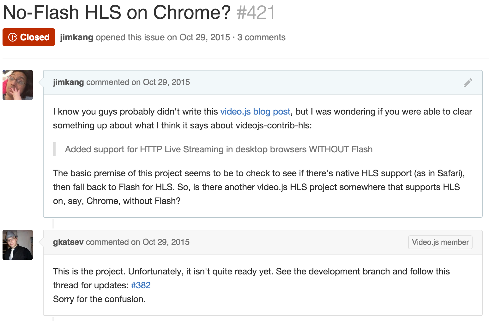
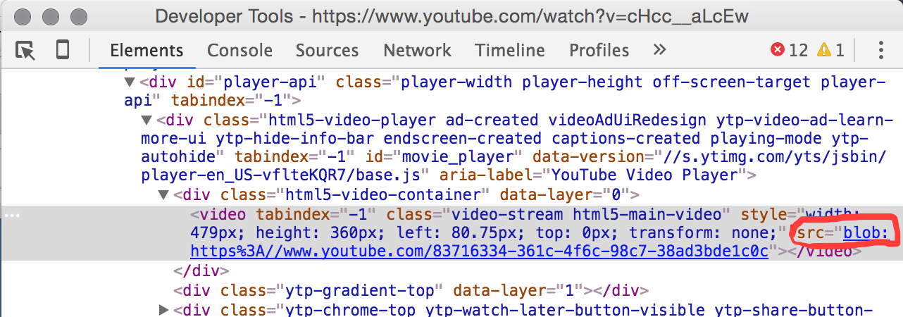
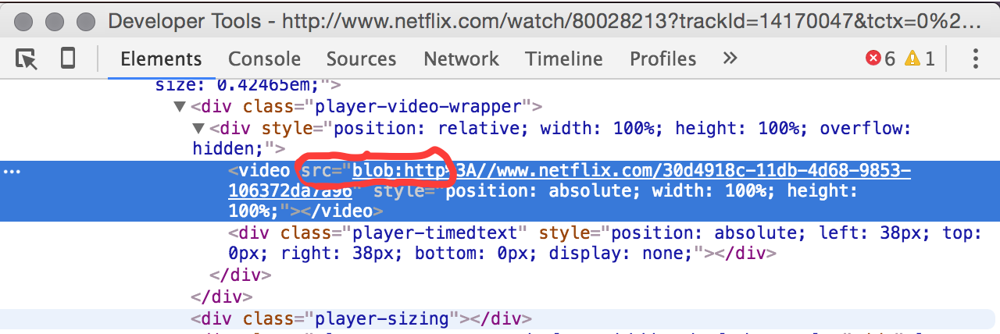

First: Streaming in general
Getting data to from one point to another, one small chunk at a time
e.g. Data processing tools
On demand
"Back pressure"
Let's go over the alternative to streaming.
<video src="file.mp4">
Firefox freezing
[demo or gif here]
Too much to handle at a time
Too long of a wait for first frame on some connections
The state of streaming video in the browser.
tl;dr: Kinda wonky
How can you get streaming video for your web app?
video.js's videojs-hls-contrib

JWPlayer
How can you get it without Flash?
Safari and Mobile Safari support HLS (a kind of streaming video) natively
<video
src="http://apple.com/bipbopall.m3u8"
height="300" width="400"
>
</video>
Chrome on Android supports HLS via that kind of markup, but NOT Chrome on desktop
OK. Does anyone have it going on all of the major browsers?
YouTube has it.

Netflix has it.

Not open source, though. So how are they doing it?
Review: Streaming is getting data to from one point to another, one small chunk at a time.
Server => video player
We know how to download file chunks.
var lastReadIndex = 0;
var xhr = new XMLHttpRequest();
xhr.open('GET', 'http://server.com/file.mp4');
xhr.xhr.onreadystatechange = stateChanged;
xhr.send();
function stateChanged() {
if (xhr.readyState === 3) {
emitChunk(this.responseText.substr(lastReadIndex));
lastReadIndex = this.responseText.length;
}
}
But getting the chunks into the video (HTMLVideoElement)?
<video> just takes a src attribute.
Fortunately, major browsers support MediaSource extensions.
Create a SourceBuffer with a url you can give to the video src.
Append chunks to the SourceBuffer as you receive them.
Requires hairy special encoding of segments via Bento.
After you get all that going, it's up to you to implement adaptive bit rate adjustments. Hooray!
Links:
- https://github.com/harvard-dce/hls-vendor-comparison
— Encode with Bento
— https://github.com/harvard-dce/encode-for-mediasource
— Reference implementation:
— https://hacks.mozilla.org/2015/07/streaming-media-on-demand-with-media-source-extensions/
— Demo
— https://github.com/harvard-dce/vstream-experiment